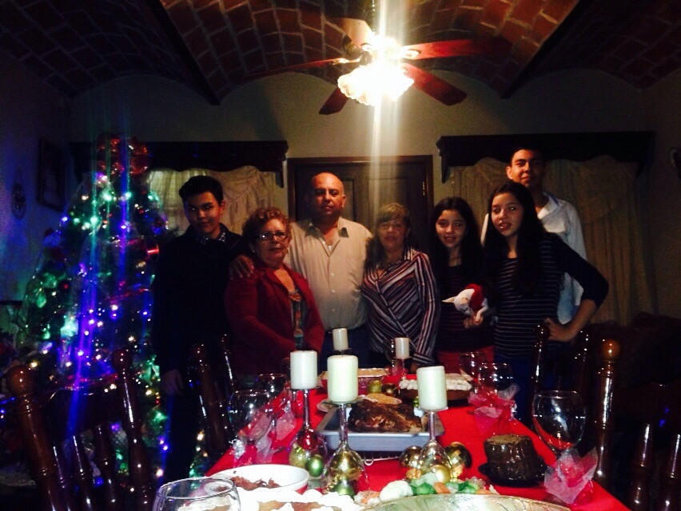
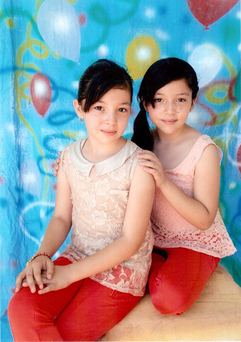
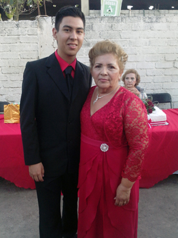

Para comenzar presentare a mis padres primero. Mi padre Oscar Ramón Guevara Cañedo nacido en Tecuala, Nayarit. Y mi madre Noemi Sánchez Gonzalez de Mocorito,Sinaloa.

Se conocieron en Los Mochis, Sinaloa y años después se casaron en el año 1995 en Mocorito, Sinaloa.


Yo nací el 7 de Junio de 1996 en Los Mochis, Sinaloa.

Después vino mi hermano Oscar Darío Guevara Sánchez el 18 de Octubre de 1998.

Y por último de mis hermanos, el 15 de Mayo del 2004 nacieron mis dos pequeñas hermanas gemelas. Marisol y Maribel Guevara Sánchez

Mi abuela materna Bertha Cañedo Plaza la queremos mucho en nuestro hogar aunque ella viva en su casa, es nuestro familiar más cercano que tenemos y nos apoya en todo.

También tenemos en la familia dos pequeños perros chihuahueños, Hashy una hembra y Coco su hijo. Hashy es una perra muy tímida con nosotros, pero con la gente extraña es muy agresiva incluso las muerde a veces, y Coco es el consentido, envidioso y juguetón.